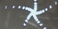
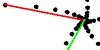
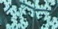

| First we make three kinds of stable pictures. | |
| Without mirrors we produce spirals. |  |
| With one mirror we produce binary trees. Comparing these pictures with the IFS formulation of trees suggested the IFS formulation of stable videofeedback patterns that is the core of this lab. | |
| With two mirrors we produce a rich variety of more complicated fractals. |
| Next we generate similar pictures using IFS. | |
| Simple spirals require two transformations. The first is straightforward, but the second is a bit tricky. |  |
| One mirror stable videofeedback patterns require two transformation IFS, more apparent in this example. | |
| Two mirror stable videofeedback patterns require four transformations (not three, as might be expected), and sometimes a bit more. |  |
Return to Video Feedback Lab.